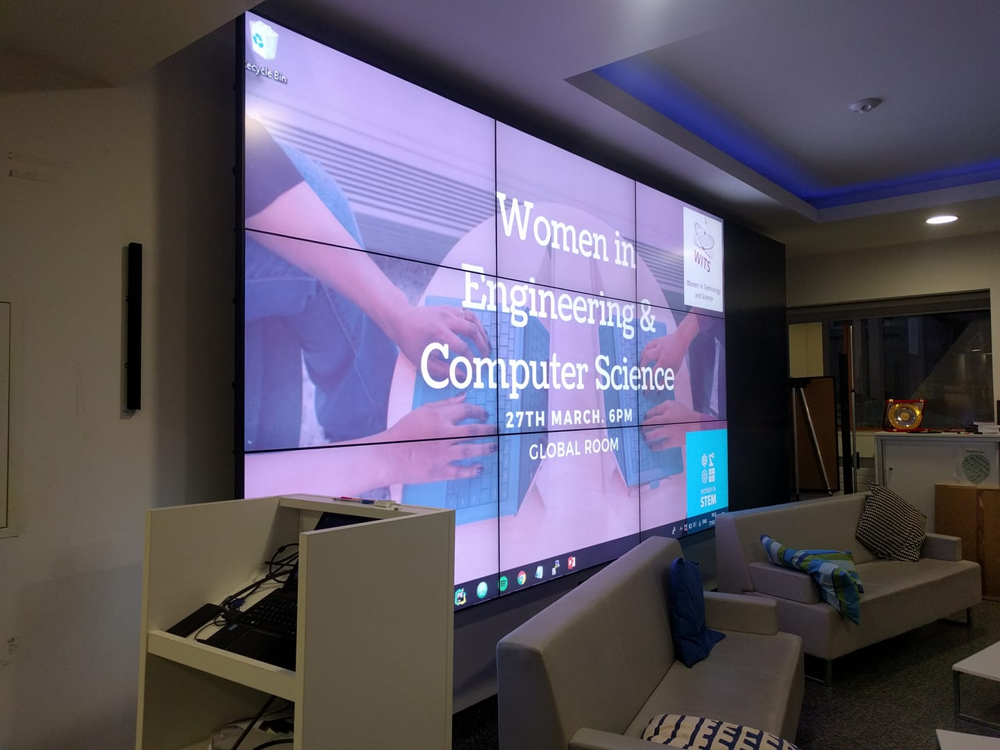
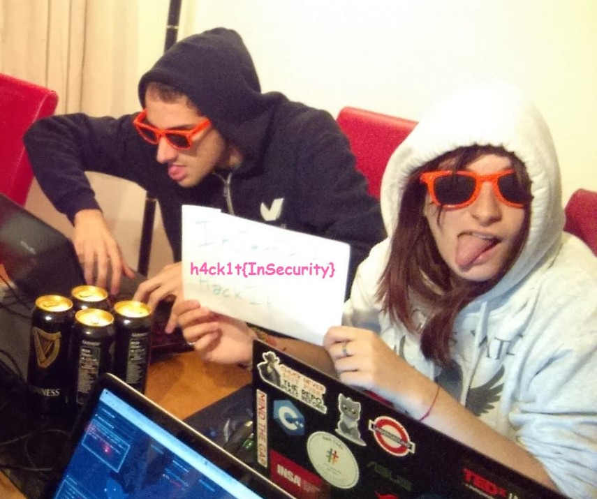

August 2019 - Dublin
I worked on a very interesting project, focused on the reliability of form submissions. We now save every form submission on S3, before processing them, so that we have a backup ready to be replayed if anything goes wrong. I had the opportunity to present my project to the company "Science Fair", where teams talk about their biggest achievements.
18th December 2018 - Dublin
I had been chosen to take part in the Career Stories program led by Techlife Ireland. I shared my little adventure, from Paris to Dublin, and wrote an article about moving to the country of the Leprechauns.
May 2017 & October 2018 - Dublin
HubSpot gives this award to a member of the Product team who has gone above and beyound during the month. The purpose is to recognize some great achievements and the amazing work done.
27th Mars 2018 - Dublin
I had the opportunity to share my path to Computer Science in Trinity College Dublin, at the Women in Computer Science and Engineering event. I got to answer so many interesting questions asked by the students.
21st Mars 2018 - Dublin
This event gathers employees and entrepreneurs in Dublin, to share thoughts around tech and innovation. I talked about growing and staying innovative in a tech company, like HubSpot, where the culture encourages curiosity and learning new skills.
10th November 2017 & 20th November 2018 - Dublin
The purpose of this event was to encourage female students in Computer Science to build a personal project. With two other HubSpot engineers, we taught to the 60 participants how to use simple tools to create their own website and to deploy it.
Technologies used: JavaScript, NodeJS, Heroku
24th October 2017 & 17th October 2018 - Dublin
HubSpot organized an event designed for Computer Science students to "connect" the dots between their passion for technology and their careers. I had the opportunity to talk at a panel discussion, about my path to Software Engineering.
12th September 2017 - Dublin
Wrote a technical article for HubSpot Product blog, talking about invisible reCaptcha. The purpose is to help developers implementing this new Google tool on their websites.
Technology used: Javascript
25th March 2017 - Cork
With two friends, I took part in the Irish Collegiate Programming Contest. We were three for one computer, so the purpose was to collaborate, and distribute exercices to work faster. This year, there were six problems, we solved them all and finished second Irish team.
Technology used: C++
23rd February 2017 - Dublin
With a team of four people, we had to solve a NP-complete problem. This year, the purpose was to organize Youtube videos on cache servers to minimize average latency. During four hours, we implemented solutions, getting better and better results. We finished 14th Irish team out of 53!
Technology used: Python
09-10th December 2016 - London
With 5 other friends, we took part in this intensive coding challenge. The purpose was to create a full-stack application for the charity Edulution in only one night. We developed a program to improve children's education in Zambia. Mathematics, literacy, agriculture, our application had to cover a lot of subject possibilities. And we had to adapt for children who were not able to read. This challenge was full of positive energy!
Technologies used: Python Django, Materialize CSS
December 2016
My idea was to create the Google offline mode T-Rex game, in 3 dimensions. In this little video game, you will have to dodge obstacles: cacti and flying dinosaurs. You can play by yourself (on a Windows computer) here.
Technologies used: C++, OpenGL
November 2016 - Work in Progress
This solitaire card game is an Android application, that tells the player when there is no more move to do. This feature exists on iOS but not on Android, as far as I know. So I wanted to do this to avoid the player to lose time in looking for a solution that does not exist. You can play by dragging and dropping cards on the screen. I plan to publish it on the Play Store!
Technologies used: Java, Android
29th October 2016 - Dublin
The UKIEPC is the UK & Ireland Subregional Contest for NWERC (the Northwestern Europe European Regional Contest) of the ICPC (worldwide contest). We were three to solve twelve algorithm and mathematical challenges, on one computer. So while one person is coding, the others think about another problem and begin to solve it on a piece of paper. We finished fourth Irish team!
Technology used: Python
May-August 2017 - Internship at Applidium - Paris
This is an Android project that solves the game Candy Crush. This service scans the grid to find sweets, computes the best move for the player and displays it on the screen, on top of Candy Crush. I also wrote a blog post , to explain more about this work (English version at the end).
Technologies used: Java, Android, OpenCV
October 2016
The purpose of this project was to build an OpenCV solution to recognize road panels on different images. I used back projection, with red sign samples, to get the borders. Then, the algorithm for connected components helped me to find the inside of the panels. Finally, I did an adaptive threshold to differentiate black and white.
Technologies used: C++, OpenCV
2016
I have been a member of the InSecurity team, a student's society for security which is involved in security competitions (CTF - Capture The Flag). I often solved the cryptography exercises and I wrote some solution descriptions here. I still like to join a CTF every now and then, specially "La Nuit du Hack", in Paris.
Technologies used: Python, Mathematics for Cryptography
2015 - 2017
I also took part in some other coding competitions: Battle Dev & Coding Battle (French local ones), Cod'INSA (organized by my college), Microsoft Coding Competition at Trinity College Dublin, Google Hash Code. I really enjoy this kind of challenges, so feel free to contact me if you organize one!